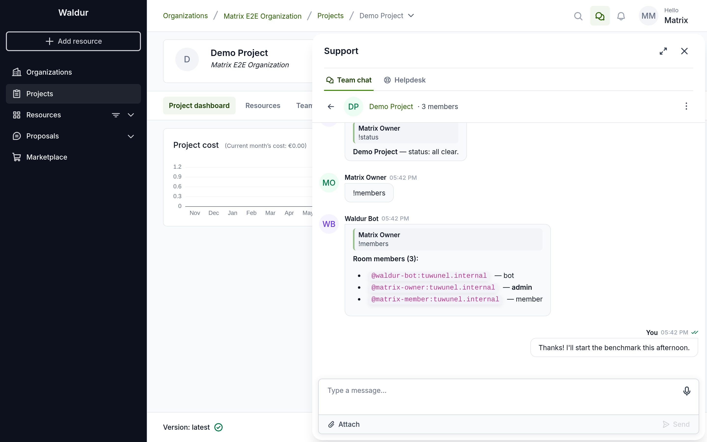
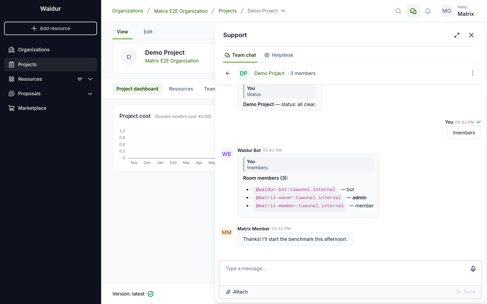

Matrix chat overview
Waldur integrates with the Matrix open communication
protocol as an Application Service (appservice). When the integration is on,
each Waldur project gets a Matrix room, project members are invited
automatically based on their roles, and operational queries (!status,
!orders, !members) are answered by a Waldur bot from inside the chat,
which also drafts support tickets from a conversation (!ticket).
Conversations are rendered in the homeport drawer next to the Waldur UI, so
team members do not need a separate Matrix client.
The video below follows a project team through it:
- the project, its team and resources, and the project's room in the drawer;
- a video call;
- a reply from Element Web on a phone;
/status, and a support ticket that!ticketdrafts from the conversation;- the ticket in the helpdesk;
- a member losing access to the room when their project role is removed;
- the integration's diagnostics.
Rooms and the chat drawer need a homeserver that supports the Application
Service API, and short-lived web sessions need it to issue refresh tokens.
Locking the Matrix account of a deactivated user, resetting a user's chat
encryption from the drawer, password mode for external clients and refusing
homeserver-admin accounts also use the Synapse admin API,
with Waldur's bot as a homeserver admin (see
Making the bot a homeserver admin);
on a homeserver without that API they do not work. The examples in this guide
use Tuwunel, which is what the
bundled docker/matrix-dev/docker-compose.yml brings up.
How the pieces fit together
graph TB
subgraph "Waldur Platform"
PROJ[Waldur Project]
ROOM[MatrixRoom]
PROFILE[MatrixUserProfile]
TASKS[Celery tasks]
WEBHOOK[Appservice webhook]
OUTBOX[Outbox]
BOT[matrix_bot process]
EXPORT[History export]
end
subgraph "Matrix homeserver"
HS[Homeserver]
ROOMHS[Matrix room]
end
PROJ -->|Create room| ROOM
ROOM -->|sync_project_members| TASKS
TASKS -->|ensure user| PROFILE
PROFILE -->|invite + join| ROOMHS
HS -->|PUT transactions, acknowledged| WEBHOOK
TASKS -->|messages to post| OUTBOX
OUTBOX --> BOT
ROOMHS -->|sync, decrypt commands| BOT
BOT -->|encrypted replies and notices| ROOMHS
PROJ -->|pre_delete| ROOM
ROOM -->|disable + archive| EXPORT
BOT -->|reads + decrypts history| EXPORT
ROOM -.->|room_id| ROOMHSWhen a Waldur project is provisioned for chat, a MatrixRoom row is
created and a celery task syncs every project member into the room via a
per-user MatrixUserProfile. Waldur joins and leaves rooms as the user
through the appservice, without logging in as them. The chat drawer talks
to the homeserver directly with a short-lived web session (see
Web chat sessions).
Rooms are end-to-end encrypted, so commands and everything Waldur posts go
through a long-running bot process, waldur matrix_bot: the Helm Deployment
waldur-matrix-bot, or the waldur-matrix-bot service in docker-compose's
matrix profile. It syncs the rooms as Waldur's bot user, decrypts the
commands, answers them if the sender holds an active project role, posts
the messages Waldur queues in its outbox, encrypted for the room, and makes
the history exports. Run exactly
one: the bot holds a lease in Waldur's database, and a second process refuses
to start while the first holds it. Without a running bot, commands go
unanswered, Waldur's notices stay in the outbox, and history exports stay
pending, so a room being disabled with export on is not archived. The appservice webhook
(PUT /_matrix/app/v1/transactions/{txnId}) only records and acknowledges the
homeserver's transactions; it does not handle commands. Project deletion
runs the same disable path that the staff "Disable room" action uses,
optionally exporting history before the room is archived.
Packaged deployments
The Helm chart ("Zero-touch setup") and docker-compose ("Appservice registration") bundle a Tuwunel homeserver and set Matrix chat up themselves:
- They supply the appservice tokens, the registration token and a bootstrap
password. docker-compose generates them into its secrets volume; Helm
generates them into a Secret unless
setup.existingSecretnames your own. On every deploy they seed Waldur's Matrix settings from them withwaldur init_matrix_settings(see "Seeding from the environment" in the setup guide). - By default they register the appservice on every deploy with
waldur register_matrix_appservice, which creates a bootstrap admin,@waldur-bootstrap, through the homeserver's shared-secret registration API and makes the bot a homeserver admin (see "Registering on Tuwunel from the command line" in the setup guide). - The Setup wizard is hidden and its API answers
409. The settings the deployment seeds (the homeserver URLs and domain, the appservice tokens, the bot localpart and the registration secret, and with SSO or calls also the login methods and the LiveKit settings) are read-only in the Settings tab, which names them, because the next deploy would write the deployment's values back. That is a lock in the UI only: Waldur's API refuses Setup but not a change to a seeded setting, so change those in the deployment instead. - Tokens are rotated in the Secret or the secrets volume, followed by a
deploy, which replaces the registration on the homeserver. The bot process
(
waldur-matrix-bot) notices a rotated appservice token within 30 seconds and starts over with it, so it needs no restart. Each guide has the steps under "Rotating the tokens" (Helm) and "Token rotation" (docker-compose). - Helm turns on the
project.show_matrix_chatfeature flag, which shows the chat in homeport and the Matrix chat admin page; on docker-compose, turn it on yourself. - Helm refuses to run Matrix chat without its bundled homeserver.
On a packaged deployment, skip
Configuring Waldur and
Setting up the appservice: the deployment runs
the management commands for you. Those
sections are for the docker/matrix-dev stack and homeservers you run
yourself.
Prerequisites
You need:
- A Matrix homeserver with the Application Service API enabled and reachable from Waldur over HTTP/HTTPS. The homeserver must be able to reach Waldur back via the URL you provide during setup (webhook callbacks).
- The homeserver's registration token,
MATRIX_USER_REGISTRATION_SECRET. Waldur registers the per-user Matrix accounts behind the embedded chat with it. To register the appservice withwaldur register_matrix_appservice, set the homeserver'sregistration_shared_secretto the same value. - A staff account in Waldur. The Setup wizard, connectivity diagnostics, and the Settings tab are staff-only.
- For voice/video calls (optional): a LiveKit SFU reachable from the browser.
Waldur itself issues the LiveKit tokens for calls; no separate token service
(such as
lk-jwt-service) is needed. The homeserver advertises Waldur's call token API as its LiveKit focus in.well-known/matrix/client'srtc_transportsblock (MSC4143) — see Voice and video calls.
The bundled docker/matrix-dev/ stack in the mastermind repo provides the
homeserver and the SFU for local development. The Helm chart and
docker-compose bring their own (see Packaged deployments).
Bringing up a local Matrix stack
From waldur-mastermind:
1 2 | |
This starts:
| Service | Port | Notes |
|---|---|---|
tuwunel |
6167 |
Homeserver, server_name=localhost |
livekit |
7880-7882 |
LiveKit SFU for Matrix RTC (API key devkey, secret devsecret) |
There is no token service in the stack: the call tokens come from the Waldur
API. tuwunel.toml advertises
http://localhost:10780/api/matrix/livekit as the LiveKit focus, the
mastermind dev API on the default port; change it if your API runs elsewhere.
Run Waldur's API with the dev_matrix_settings settings module, and the bot
next to it with the same module:
1 2 3 4 | |
The settings module runs Celery tasks inline, because a dev machine has no
worker: room creation and member sync are Celery tasks, so without it rooms
stay in creating and nobody is invited. It also adds host.docker.internal,
the name Tuwunel reaches Waldur by, to ALLOWED_HOSTS, and defaults the
LiveKit Constance keys to the stack's key, secret and URLs. If you run a
Celery worker instead, add host.docker.internal to ALLOWED_HOSTS yourself.
The bot waits until the homeserver and the appservice token are configured,
so it can start before the appservice is set up. Without it, commands go
unanswered and Matrix bot running fails in Diagnostics.
Health check:
1 2 3 4 5 | |
Tuwunel and LiveKit should return 200, and the well-known document should
list the livekit transport with the Waldur URL. Once Matrix chat is enabled
in Waldur, the token request answers 400 with M_BAD_JSON (the empty body
is refused); a 404 means Matrix chat is switched off. Waldur reaches Tuwunel
at http://localhost:6167.
In homeport, VITE_LK_JWT_URL is optional. When set in a dev build, it
replaces the focus the homeserver advertises, which is useful for pointing the
browser at a call token API on another port.
Configuring Waldur
Waldur's side of the integration is a handful of Constance settings. Both ways of setting up the appservice take the same settings; they only differ in how the values get into Constance. On the dev stack:
| Setting | Dev stack value | Notes |
|---|---|---|
MATRIX_ENABLED |
true |
The commands switch it on at the first run; by hand you switch it on |
MATRIX_HOMESERVER_URL |
http://localhost:6167 |
Required. Where Waldur reaches the homeserver |
MATRIX_HOMESERVER_DOMAIN |
localhost |
Required. The homeserver's server_name |
MATRIX_USER_REGISTRATION_SECRET |
devregistrationsecret |
Required. Must match registration_token and registration_shared_secret in tuwunel.toml |
MATRIX_APPSERVICE_SENDER_LOCALPART |
waldur-bot |
The bot's localpart |
MATRIX_EXTERNAL_LOGIN_METHOD |
none |
password allows Element; oidc needs the SSO steps |
MATRIX_HISTORY_EXPORT_ENABLED |
true |
|
MATRIX_LIVEKIT_KEY, MATRIX_LIVEKIT_SECRET |
devkey, devsecret |
Calls only. The key pair Waldur signs call tokens with |
MATRIX_LIVEKIT_URL |
http://localhost:7880 |
Calls only. Internal, for room management |
MATRIX_LIVEKIT_PUBLIC_URL |
ws://localhost:7880 |
Calls only. What browsers connect to |
dev_matrix_settings already defaults the four LiveKit settings to these
values. The appservice tokens, MATRIX_APPSERVICE_AS_TOKEN and
MATRIX_APPSERVICE_HS_TOKEN, are not in the table: with the management
commands you generate them yourself, and by hand the Setup wizard generates
them.
Turn on the project.show_matrix_chat feature flag too, under
Administration → User interface → Features or with waldur load_features.
It shows the chat in homeport and also the Matrix chat admin page, so the
Setup and Diagnostics steps below need it. The backend continues to gate
access on MATRIX_ENABLED regardless — the feature flag only toggles the UI.
After changing Constance values, the homeport reads them on its next full
page load (the /api/configuration/ response is cached in the SPA bootstrap).
Setting up the appservice
Setting up the appservice means two things: Waldur stores a pair of appservice tokens, and the homeserver registers Waldur's appservice with the same pair. There are two ways to do it:
- With the management commands, which is what the Helm chart and docker-compose run on every deploy. Use this on Tuwunel.
- By hand, with the Setup wizard and the registration YAML. Use this on Synapse, or when you want to register the YAML yourself.
Pick one. The Setup wizard and init_matrix_settings don't mix:
init_matrix_settings marks the tokens as managed by the deployment
(MATRIX_TOKENS_MANAGED_BY), which hides the wizard and makes its API answer
409. To move from one way to the other later, see "Seeding from the
environment" in the
setup guide.
Either way, finish with Verifying the integration:
Bot authentication (whoami) and Bot is a homeserver admin should pass.
Warning
The Waldur URL you pass in either way is where the homeserver calls Waldur
back, so it must be reachable from inside the homeserver process, not just
from the operator's browser. For Tuwunel running in Docker that reaches the
host, use http://host.docker.internal:10780 (Linux/macOS Docker Desktop).
For Kubernetes deployments you usually want the in-cluster service DNS.
With the management commands
Run both commands in a terminal with the same DJANGO_SETTINGS_MODULE as the
API.
-
Seed the settings from the environment.
waldur init_matrix_settingsreads each setting from the environment variable of the same name:1 2 3 4 5 6 7 8
export MATRIX_HOMESERVER_URL=http://localhost:6167 export MATRIX_HOMESERVER_DOMAIN=localhost export MATRIX_USER_REGISTRATION_SECRET=devregistrationsecret export MATRIX_EXTERNAL_LOGIN_METHOD=none export MATRIX_HISTORY_EXPORT_ENABLED=true export MATRIX_APPSERVICE_AS_TOKEN=<random token> # e.g. openssl rand -hex 32 export MATRIX_APPSERVICE_HS_TOKEN=<another random token> waldur init_matrix_settingsGenerate the two tokens once and keep them, for example in an env file: running the command with other tokens rotates them. The homeserver URL, domain, registration secret and both tokens are required; without one of them the command fails and writes nothing. It switches
MATRIX_ENABLEDon at the first run. -
Register the appservice on the homeserver:
1 2
MATRIX_BOOTSTRAP_PASSWORD=<a password you keep> \ waldur register_matrix_appservice --url http://host.docker.internal:10780It creates a bootstrap admin,
@waldur-bootstrap, through the homeserver's shared-secret registration API, which needs the homeserver'sregistration_shared_secretto equalMATRIX_USER_REGISTRATION_SECRET(on the dev stack both aredevregistrationsecret). It then sends the registration to the admin room, makes the bot a homeserver admin and checks the result. Later runs sign in as the bootstrap admin, so keep the password. "Registering on Tuwunel from the command line" in the setup guide has the details.
From then on the Settings tab shows the settings a deployment seeds as
read-only (see Packaged deployments). Change them in
the environment and run init_matrix_settings again.
To rotate the tokens, put new ones in the environment, run
init_matrix_settings, then run register_matrix_appservice with the same
MATRIX_BOOTSTRAP_PASSWORD. It replaces the old registration. The bot process
(waldur matrix_bot) notices the new appservice token within 30 seconds and
starts over with it, so it needs no restart.
By hand
- Put the settings from Configuring Waldur into
Constance,
MATRIX_ENABLEDincluded, since the wizard is disabled while it is off: in the Settings tab under Administration → Configuration → Matrix chat, in the Django admin (/admin/constance/config/), or from a Django shell (config.MATRIX_HOMESERVER_URL = "http://localhost:6167"and so on). The wizard asks for the homeserver URL, domain and registration secret itself if they are still empty. -
Generate the tokens: on the same page, click Setup appservice. The wizard generates fresh AS/HS tokens, stores them in Constance, and shows the registration YAML. You can also call the API directly:
1 2 3 4
curl -X POST http://localhost:10780/api/admin/matrix-appservice/setup/ \ -H "Authorization: Token YOUR_STAFF_TOKEN" \ -H "Content-Type: application/json" \ -d '{"url": "http://host.docker.internal:10780"}'The response includes a
bot_provision_statusfield. It is"ok"when the bot user was registered on the homeserver,"failed: …"otherwise. On a first Setup it isM_UNKNOWN_TOKEN, because the homeserver does not have the registration yet; the next step fixes that.To print the YAML again later without rotating the tokens, run
waldur generate_appservice_registration --url <URL the homeserver uses to reach Waldur>(http://host.docker.internal:10780on the dev stack). -
Register the YAML on the homeserver.
On Tuwunel and other Conduit-derived homeservers, act as a homeserver admin in the admin room,
#admins:<homeserver domain>:- Create an admin through the homeserver's shared-secret registration
API, with
"admin": true. Don't rely on the first account registered becoming an admin: the Helm chart and docker-compose turn Tuwunel'sgrant_admin_to_first_useroff, because Waldur registers an account for whoever opens the chat first. The setup guide's Token rotation has a script that creates such an admin, and one that deactivates it when you are done. On the dev stack the secret isdevregistrationsecret. - As that admin, send
!admin appservices registerin the admin room, with the YAML in ayamlcode block below it. Send it from a Matrix client, or with the admin's access token through the client API; the docker-compose guide's Registering by hand script shows the calls. Tuwunel repliesAppservice registered with ID: waldurand creates the bot's account. - Send
!admin users make-user-admin @<bot localpart>:<homeserver domain>(see Making the bot a homeserver admin).
On Synapse, drop the YAML into a path listed in
app_service_config_files, restart the homeserver, and make the bot a homeserver admin. - Create an admin through the homeserver's shared-secret registration
API, with
Don't run Setup again to provision the bot. Setup generates new tokens, and the registration you just made would stop working.
To rotate the tokens, run Setup again and register the new YAML. On Tuwunel,
remove the old registration first with !admin appservices unregister waldur:
Tuwunel refuses to register an ID that is already registered, and rejects
Waldur's requests under the new tokens until it has them. The bot process
(waldur matrix_bot) notices the new appservice token within 30 seconds and
starts over with it, so it needs no restart.
Verifying the integration
Open Diagnostics from the same page:

The dialog runs live checks against the homeserver and reports the result.
AS/HS tokens are shown as SHA-256 fingerprints (sha256:<first-12-hex>)
so the diagnostic does not leak token material. The integration is ready for
use when every check is green, except the LiveKit check, which matters only
for voice and video calls. Every check talks from Waldur to the homeserver
except Homeserver can reach Waldur (ping), which has the homeserver call
Waldur back with the HS token: it fails on a wrong HS token, or on a Waldur
URL in the registration that the homeserver cannot reach. Bot commands do not
depend on it, as the bot reads them from its own sync; if commands go
unanswered, check that the bot process is running and look at its log. The
setup guide
lists the checks.
Creating a project room
From the Rooms tab on the same page, click Create, then pick an
organization and one of its projects. Only projects without a Matrix room are
listed. The page is for staff and support. Users who hold MATRIX_ROOM.CREATE
on a project or its organization (organization owners by default) create the
project's room from its Settings → Chat tab instead.
To give every new project a room, turn on MATRIX_AUTO_CREATE_PROJECT_ROOMS;
waldur provision_matrix_rooms creates rooms for existing projects. See
Creating project rooms.
Once created, the room synchronises its members (see Who is in a project room):

Each row's action menu has Open in team chat, Connect to Matrix… (when external clients are allowed), Join room or Leave room, Sync members and Export history, and for staff also Retry, Re-enable chat and Disable chat. Expanding a row shows the room's History exports and Members. State transitions go through the standard Matrix room lifecycle and are guarded server-side against concurrent calls. Staff also get a Calls tab with the calls running on LiveKit, and How it works explains the integration.
Who is in a project room
Member sync and role changes decide who is in a project's room and which Matrix power level each member gets. Power level 50 shows as Admin in the chat's member list; 100 is the Waldur bot.
| Role | Rooms the user is in | Power level |
|---|---|---|
| Project admin | That project's room | 50 |
| Project manager, project member | That project's room | 0, or 50 if the role has MATRIX_ROOM.CREATE |
Organization role with MATRIX_ROOM.CREATE (the owner, by default) |
Every project room in the organization | 50 |
| Organization support, organization reader | None | — |
| Staff, global support | None automatically; they can join any room as a moderator | 50 |
MATRIX_ROOM.CREATE is the permission to create a project's chat room, and
whoever may create a room is also in it and runs it. Granting it on an
organization adds the role's holders to every project room as admins;
granting it on a project makes them admins of that project's room. Taking it
away from organization owners takes them out of every project room.
A user with several roles gets the highest power level. Roles on offerings, resources, service providers or calls do not put anyone in a project room.
Using the chat in homeport
When project.show_matrix_chat and MATRIX_ENABLED are both on, the chat
icon in the page header (tooltip Support) opens a drawer whose Team
chat tab holds the user's rooms; a Helpdesk tab sits next to it when
support is enabled. A project with an active room also gets a
Communication page with the same chat:

Project members can send messages, attach files, react with emoji, and start voice or video calls (when LiveKit is configured). All UI strings flow through the same i18n pipeline as the rest of homeport, so the chat inherits the active language.
Messages are sent over the homeserver via matrix-js-sdk; the embedded client is started inside the homeport tab and tears down on Waldur logout.
Rooms are end-to-end encrypted from creation (see
End-to-end encryption).
The drawer decrypts in the browser with a
WebAssembly module, so homeport's Content-Security-Policy must allow
'wasm-unsafe-eval' in script-src. The Helm chart and docker-compose
already do; add it if you serve homeport behind your own proxy.

Multiple users in the same room
Each project member gets their own per-user Matrix account (registered
with the homeserver's registration token, MATRIX_USER_REGISTRATION_SECRET)
and an independent matrix-js-sdk session inside their browser tab. Sending a
message from one user propagates to every other room member through
the homeserver in real time. The drawer attributes each message with
the Waldur display name, not the raw Matrix ID — so an @manager:
localhost message is shown as Project Manager to every viewer.
The two screenshots below were captured from two browser sessions logged in as different users simultaneously. The project member's session shows the organization owner's earlier messages and the bot's answers, plus the member's own reply; the owner's session shows that reply landing without a refresh.
| Project member view | Organization owner view |
|---|---|
 |
 |


Unread badges are computed per user from Matrix read receipts; opening the room clears them.
Full-screen view
On desktop screens, the drawer's Expand to full screen corner button (top-right of the drawer header) widens the drawer over the whole content area, next to the page's sidebar, which stays visible: the room list moves to a left rail and the conversation takes the remainder. The Collapse to panel button on the same corner returns to the docked drawer.

This mode is meant for screen-share / projector use and for users who want the chat to be the primary surface for an extended period. The backing matrix-js-sdk client is the same — switching modes doesn't reconnect, re-paginate, or lose typing buffers.
Sharing files
The Attach button (paperclip icon) in the message composer opens the
browser's file picker. Uploaded files are sent through the homeserver's
authenticated media API (/_matrix/media/v3/upload →
/_matrix/client/v1/media/download)
and rendered inline for image and video MIME types.

Every recipient's homeport client makes its own authenticated fetch
against /_matrix/client/v1/media/download/... carrying the user's
Matrix access token; the bytes are then exposed as a blob: URL so
nothing leaks into the page's HTTP referer or browser extensions.
There is no unauthenticated fallback — if a download fails (e.g.
the user lost access), the message renders an Attachment unavailable
placeholder instead of leaking the media via the legacy unauthenticated
endpoint.

Voice and video calls
Voice and video calls use LiveKit as the SFU and follow the Matrix RTC pattern via MSC4143. The chat header's kebab menu shows a Start call entry once the integration has decided that a LiveKit transport is reachable.
The conditions are:
- The user has loaded the room (the matrix-js-sdk client is connected and the room is the active room).
- The homeserver advertises a
livekitentry underrtc_transportsin.well-known/matrix/client(or the legacyrtc_focikey). The bundledtuwunel.tomlships this entry pointing at the Waldur API. - The well-known fetch from the browser succeeded. If the homeserver
is unreachable or the response doesn't include a
livekittransport, the menu shows only Mute, plus Open in external Matrix client whenMATRIX_EXTERNAL_LOGIN_METHODispasswordoroidc.

When Start call runs, the browser exchanges the user's Matrix
OpenID token for a short-lived LiveKit JWT by posting it to
/sfu/get under the livekit_service_url the homeserver advertised,
then connects to the LiveKit room. /sfu/get is the older endpoint, the one
Element Call uses in its compatibility mode. The drawer falls back to
/get_token only when /sfu/get is missing and the call is unencrypted, and
every Waldur room is encrypted. Element Call may use either. While the
call is connecting (15-second budget), a spinner replaces the message
list; on success the call view renders inline with the LiveKit
participant tiles and call controls (mute, camera, screenshare, hang
up):

If the homeserver advertises LiveKit but the SFU or Waldur's call token API is not reachable, the call view surfaces a single-line Could not connect to the call error with Reload and Close buttons — the call provider never gets stuck on a spinner.
Joining an in-progress call
When one room member is on a call, every other member sees a Call in progress banner above the message list with a Join call button. The banner is driven by Matrix RTC membership events: each participant publishes a per-device call-membership state event, and the homeport tracks the room's set of live members through the matrix-js-sdk timeline.

Joining produces a multi-participant view with a tile per LiveKit
publisher. The local tile is labelled with the user's Waldur display
name; remote tiles show the display name once the Matrix call
membership event for that participant has propagated. Until it lands, a
tile may briefly show the participant's LiveKit identity, their Matrix ID
and device (@user:domain:DEVICE), after which the
homeport's NameOverrider swaps the visible label.

How call tokens are issued
Waldur serves the call token API that Matrix clients — Waldur's chat drawer
and Element Call alike — use to join a call. It replaces lk-jwt-service, so
deployments run only the homeserver and the LiveKit SFU next to Waldur.
Point the homeserver's .well-known/matrix/client LiveKit focus at it —
the livekit entry under rtc_transports (or the legacy rtc_foci key):
1 2 3 4 | |
Under that base Waldur answers:
| Endpoint | Request | Answer |
|---|---|---|
POST /api/matrix/livekit/get_token |
{room_id, slot_id, openid_token, member: {id, claimed_user_id, claimed_device_id}} |
{url, jwt} |
POST /api/matrix/livekit/sfu/get |
{room, openid_token, device_id}, the older form Element Call falls back to |
{url, jwt} |
POST /api/matrix/livekit/delegate_delayed_leave |
anything | 404 M_NOT_FOUND: not supported |
For each token request Waldur:
- Verifies the Matrix OpenID token with the homeserver, through its
federation endpoint
/_matrix/federation/v1/openid/userinfoatMATRIX_HOMESERVER_URL, which must therefore be reachable from Waldur there. Users of other homeservers are refused. - Checks room membership and the device: the user must be joined to the room at that moment, and the device named in the request must be one of their own. This applies to any room the user has joined, not only Waldur's project rooms. A deactivated Waldur user is refused.
- Rate-limits per client address (
matrix_livekit_token, 600/hour by default) and per Matrix user (matrix_livekit_token_user, 120/hour). The client address is the lastX-Forwarded-Forentry, the one the proxy in front of Waldur wrote. - Issues a LiveKit token for that room's call, valid for 3 minutes; LiveKit renews the token of a connected participant.
Every refusal to join gets the same 403 M_FORBIDDEN answer, so the response
does not reveal whether a room exists or who is in it. An OpenID token the
homeserver does not accept, or one for another user than the request claims,
gets 401 M_UNAUTHORIZED. If MATRIX_LIVEKIT_KEY, MATRIX_LIVEKIT_SECRET or
MATRIX_LIVEKIT_PUBLIC_URL is unset, the homeserver cannot be reached, or
Waldur cannot create the call's room through LiveKit's API at
MATRIX_LIVEKIT_URL, the endpoints answer 503.
Element Call can hand its delayed leave event (MSC4140) over to the token
service, which then sends the leave once the member drops off the SFU. Waldur
does not take that over: delegate_delayed_leave always answers "not
supported", so clients keep the delayed leave themselves and restart it while
they are in the call.
When a user loses access to a Waldur room (role revoked, deactivation, room disabled), Waldur also disconnects them from its call.
Any origin may call these paths, without credentials, so Element Web on
another domain can use them. The packaged Helm chart and Docker Compose stack
route /api/matrix/livekit to Waldur with CORS open to all origins. The
LiveKit admin API (/twirp) is used only by Waldur internally and should not
be exposed publicly.
Bot commands
The Waldur bot answers operational queries from inside the chat:
!help— list available commands.!status— errored resources, pending approvals, in-flight operations.!orders— last five marketplace orders for the project.!members— Waldur-aware membership list with roles.!ticket [description]— draft a support ticket from the conversation; see Support tickets from the chat.!ticket send,!ticket cancel— send or drop your open draft.
Senders are gated server-side. The bot resolves the sender's Matrix ID to
their Waldur user via MatrixUserProfile, and replies only when that user
holds an active project or customer role on the room's linked project. A
local account that holds no such role, such as a guest someone invited by
hand, gets a single-line denial, not project data. Accounts on other
homeservers cannot join at all: Waldur creates rooms unfederated (see
Creating a room).

Commands in the composer
Typing ! or / at the start of a message opens a menu of the commands you
can use in the room; one you cannot use there now is left out. ! lists the
bot's commands, / Waldur's own as well, such as /call. The arrow keys move
through the menu, Enter or Tab puts the command in the message, and Escape
closes it. A command that takes nothing more, typed out in full, is sent on the
first Enter.
A / command is checked before it is sent: /status goes out as !status,
/call starts a call without sending anything, and a command that does not
exist or cannot be used in the room stays in the composer with the reason.
Start a message with // to send it with a leading slash. Chat commands
in the room's menu lists every command with what it does, and why one is not
available.
Support tickets from the chat
!ticket drafts a support ticket from the conversation it is sent in: its
thread, the message it replies to and the ones before it, or the messages
before it. A short description can follow
(!ticket VM does not boot since the update). The bot posts the draft in a
thread as a card. When the AI assistant is enabled for the member, the model
writes the title and description; otherwise the bot puts a plain draft together
from the quoted messages and the project's facts.
Only the member who asked can act on the draft: Create ticket sends it to
the helpdesk as them, Edit opens the support request form with the draft
filled in, and Cancel draft drops it. !ticket send and !ticket cancel
do the same from the keyboard. The other members see the card without
actions. A draft expires after MATRIX_TICKET_DRAFT_TTL_MINUTES (15 by
default). Once the ticket is created, the card links to it and shows it as it
was sent, edits included.
The helpdesk must be enabled, and the member needs an email address and a full name in Waldur and a role that may report issues for the project. What the bot reads, what reaches the model and the helpdesk, and how drafts are stored are under "Drafting support tickets" in the Matrix appservice setup.
Web chat sessions
With refresh tokens configured on the homeserver (the Helm chart and
docker-compose do this for Tuwunel), the chat drawer never holds a long-lived
token. It calls POST /api/matrix/session/, which signs the user in through
the appservice on a new device (WALDUR_WEB_<id>) and returns an access token
and a refresh token. The drawer keeps both in memory and renews the access
token through Matrix /refresh. It asks Waldur for a new session when a
refresh is rejected or when the homeserver signs its device out, for example
from Element's session list or because Waldur's limit of web devices was
reached. Whether the user may still chat is decided there: a deactivated,
deleted or signed-out user gets no new session and is returned to the login
page. When chat was switched off, or the new session is signed out again
within a minute, the drawer shows Your chat session has ended.
Waldur is consulted only when the drawer connects, when a refresh is rejected and when the device is signed out. Switching chat off or signing out of Waldur in another tab therefore does not cut an open drawer: it keeps working until it next needs a new session.
The homeserver sets the lifetimes:
| Tuwunel key | Helm value | Default | Meaning |
|---|---|---|---|
access_token_ttl |
matrixChat.homeserver.accessTokenTtl |
300 |
Access token lifetime in seconds |
refresh_token_ttl |
matrixChat.homeserver.refreshTokenTtl |
86400 |
Idle lifetime of the refresh token in seconds |
docker-compose sets the same values in config/matrix/tuwunel.toml.template;
edit the template to change them. Each refresh moves the idle deadline
forward, so an open drawer never expires. Logins without a refresh token, such
as Element with a password, keep non-expiring tokens.
Every session has its own device. Tuwunel keeps one refresh token per device, so a device shared by two browser tabs would revoke itself. After each new session Waldur signs out the user's web devices not seen for 24 hours, a window fixed in Waldur, and beyond the 10 most recently seen it signs out the rest, except devices seen in the last ten minutes: those belong to open tabs. A daily task applies the same rules to every provisioned user, so the devices of users who start no new session are signed out too. The setup guide has the full rules.
External clients
MATRIX_EXTERNAL_LOGIN_METHOD decides whether users can also open rooms in
an external client: none (default) hides the option, password shows the
homeserver and the user's Matrix ID and lets them generate a password, and
oidc tells the user to sign in with single sign-on configured on the
homeserver. Use oidc in production: users then sign in to their client with
the same identity provider as Waldur, and there is no Matrix password to leak.
password is meant for testing and for installations without an identity
provider.
In password mode Waldur stores no Matrix password. The user clicks
Generate password in the external client dialog and gets a random password
that is shown once; generating again replaces it on the homeserver (see
Generated passwords).
Waldur sets the password through the homeserver's admin API, so the bot must
be a homeserver admin; until it is, generating fails. On Tuwunel, send
!admin users make-user-admin @<bot localpart>:<homeserver domain> in the
admin room. waldur register_matrix_appservice does this itself, so on Helm
and docker-compose, which run it on every deploy, the bot is an admin already.
Then check that Bot is a homeserver admin passes in Diagnostics. Make
the bot an admin in the other modes too: without it, Waldur cannot lock the
Matrix account of a deactivated user, and a user whose recovery key is lost
cannot reset their chat encryption from the drawer. It also lets Waldur refuse
to give a user a homeserver admin's account, and lets the appservice token use
the admin API as the bot. Treat that token as a homeserver admin credential
whether or not the bot is an admin: it can act as any account of the
homeserver, admins included, from the moment the appservice is registered.
Making the bot a homeserver admin
explains why and covers Synapse.
none and oidc only hide the option: password login still works on the
homeserver, so switching away from password does not cut off users who
have generated a password. To stop new password logins, turn them off on the
homeserver with login_with_password = false
(Helm matrixChat.homeserver.loginWithPassword: false, docker-compose
WALDUR_MATRIX_LOGIN_WITH_PASSWORD=false). Clients already signed in stay
signed in until their sessions are signed out. Waldur's chat drawer signs in
through the appservice, but its encryption reset answers interactive auth with
a temporary password and has not been tested with password login off (see the
warning under
Single sign-on for external clients).
An admin created with a password can then no longer sign in to a client
either.
That includes the bootstrap admin that registers the appservice. A first
install and routine deploys still work, but changing the registration then
needs a homeserver admin's access token: admin_token in the Helm Secret,
on standard input to a one-off register container on docker-compose
(docker compose --profile matrix run --rm --no-deps -T waldur-matrix-register
/etc/waldur/matrix/register-matrix.sh --admin-token-stdin), or
MATRIX_ADMIN_TOKEN for register_matrix_appservice. Without one, a token
rotation fails after the new tokens are seeded, with "Password login is disabled on the homeserver
(login_with_password = false), so the command cannot sign in as
@waldur-bootstrap", and any other change to the registration, such as
Waldur's URL, is only warned about and not made. The "Rotating with password
login off" sections of the Helm and
docker-compose guides say
how to get a token.
The homeserver reads its configuration only at startup. With Helm, a
helm upgrade that changes a non-secret matrixChat.homeserver value restarts
it. The checksum that does this leaves out the secrets (registrationToken,
sso.clientSecret) and any Secret you manage yourself, so after changing one
run kubectl rollout restart statefulset/matrix-homeserver.
(sso.waldurRegistrationMethod is left out too, but it is Waldur's setting,
not the homeserver's, and needs no restart.) With docker-compose,
re-render the configuration and restart Tuwunel, which an up leaves running
with the old values:
1 2 | |
Single sign-on for external clients
In oidc mode, users sign in to Element through the same identity provider
(IdP) as Waldur and land in the Matrix account Waldur provisioned, with their
project rooms. Waldur hands out no password.
Single sign-on for Matrix clients
explains how the accounts line up, what each setting does and the limits. The
"Single sign-on for Matrix clients" sections of the
Helm and
docker-compose guides list
their values and what they check.
- Point Waldur's identity provider at the IdP with
user_fieldset tousername, and setMATRIX_USER_ID_FORMAT = username,MATRIX_EXTERNAL_LOGIN_METHOD = oidcandMATRIX_SSO_REGISTRATION_METHODto that identity provider's name in Waldur, such askeycloak. Waldur gives a Matrix account only to users who registered through it; while the setting is blank, no user gets one. The packagings seed it from HelmmatrixChat.homeserver.sso.waldurRegistrationMethodand docker-composeWALDUR_MATRIX_SSO_REGISTRATION_METHOD. - Register a client for the homeserver at the IdP with the redirect URI
https://<homeserver>/_matrix/client/unstable/login/sso/callback/<client id>. - Turn on SSO on the homeserver (Helm
matrixChat.homeserver.sso, docker-composeWALDUR_MATRIX_SSO_*). Its claim must be the one Waldur's identity provider uses asuser_claim; keep the defaultsubunless the IdP controls usernames. - List every other homeserver admin in the forbidden usernames (Helm
sso.forbiddenUsernames, docker-composeWALDUR_MATRIX_SSO_FORBIDDEN_USERNAMES). Both packagings trust the IdP, which signs a user in to any existing account whose name matches their claim, not only the ones Waldur provisioned. Both always reserve Waldur's bot andwaldur-bootstrap, the bootstrap admin that automatic registration creates, ahead of the list, but nothing else, so without this step an IdP user named like an admin gets the admin's account. The two take different formats: Helm takes anchored patterns, such as^admin$(default[]), and docker-compose takes plain localparts separated by commas, such asmatrix-admin. A bot localpart changed in Waldur's settings rather than in the packaging has to be listed too. -
Turn off password login and restart the homeserver, as above.
Warning
Turning password login off has not been tested together with the drawer's encryption reset. A user whose recovery key is lost resets their chat encryption from the drawer, which answers the homeserver's interactive auth with a temporary password that Waldur sets through the admin API. Check that a reset still works on your homeserver before you turn password login off in production.
To check it, sign in to Element with the homeserver URL and the SSO button after the user has opened Waldur's chat once: Element shows the user's Waldur Matrix ID and project rooms, and no second account exists for them.
End-to-end encryption
The user guide's Chat encryption page is what to point users at; this section is what operators need to know.
What is encrypted. The content of messages and files: text, edits, replies, attachments and voice messages. Room names and topics, membership, timestamps, which event replies to, edits or reacts to which, and the emoji of reactions stay in plaintext on the homeserver, as Matrix needs them to route events. Say "message and file content is encrypted", not "the homeserver stores only encrypted data". Calls in encrypted rooms, which all of Waldur's rooms are, are end-to-end encrypted too, with a key per participant that goes Olm-encrypted to each member's devices; LiveKit still sees who takes part and when, the kinds and sizes of their tracks and who is speaking.
Who holds the keys. Each user's encryption identity (cross-signing keys, key
backup, and the dehydrated device that receives messages while no drawer is
open) lives on the homeserver, encrypted under the user's recovery key. Waldur
escrows every recovery key, encrypted at rest under FIELD_ENCRYPTION_KEY, and
hands it only to the user's own sign-in: to the drawer at the start of each
session, and to the user in the external client dialog. The Waldur bot holds the
room keys of every room since its creation, in its crypto store in Waldur's
database. The encryption therefore protects against someone who gets the
homeserver's database or its backups, not against the operators of the Waldur
deployment, who can read every message.
Back up together, and keep FIELD_ENCRYPTION_KEY.
- Back up the homeserver and Waldur's database together, and restore them together. A Waldur database restored to a point before a user first opened the chat, while the homeserver keeps newer data, leaves that user's identity locked (see Locked identities).
- Without
FIELD_ENCRYPTION_KEYno escrowed recovery key, and not the bot's crypto store, can be read. Set a dedicated key rather than relying on the one derived fromSECRET_KEY, keep it outside the database backups, and never rotateSECRET_KEYwhileFIELD_ENCRYPTION_KEYis unset: the derived key changes with it. RotateFIELD_ENCRYPTION_KEYonly withreencrypt_fields(see the field encryption guide). - Never reset the bot's crypto store: room history the bot holds, and the history export, depend on it.
Element and other clients. In password and oidc mode the external
client dialog has a Show recovery key button. Waldur returns the key only
after checking that it still opens the user's secret storage on the homeserver,
records each reveal in the user's event log (matrix_recovery_key_viewed), and
refuses it to personal access tokens, OIDC access tokens and requests made while
staff impersonate the user. That does not keep the key from staff: while
impersonating, they can fetch the user's own Waldur API token, which the endpoint
accepts. Operators are trusted with the keys anyway, as Waldur escrows them;
binding key access to an interactive sign-in is planned. With the key, Element verifies its session and reads the user's
history. The matrix_recovery_key rate limit (default 30/hour per user)
applies.
Keys Waldur never saw. A user who set encryption up in Element before ever opening the drawer, or who resets it there later, has a key that Waldur does not hold. The drawer then shows Encrypted messages cannot be read and offers Enter recovery key before Reset encryption. The key the user enters is checked against their secret storage in the browser and again by Waldur, then escrowed; the drawer does not ask again. Until the user enters it, chat in Waldur stays locked for them. Only a user without any working key needs the reset, which replaces the identity and deletes the old key backups; the bot then writes the history it holds into the new backup.
Keys Waldur can no longer read. A recovery key escrowed under a
FIELD_ENCRYPTION_KEY that is since lost, or under the key derived from a
SECRET_KEY that was since rotated, is still in the database but cannot be
decrypted. Waldur treats it as no key: the drawer shows the same Encrypted
messages cannot be read notice with Enter recovery key and Reset
encryption, and Show recovery key returns nothing. A user who kept the key
in another client enters it and Waldur escrows it again; the others reset. The
old key put back in FIELD_ENCRYPTION_KEY_FALLBACKS (not as the primary key,
which would lock out everything encrypted since) makes the escrowed keys of
every user who has not reset meanwhile work again without anyone doing anything.
History for new members. A member added to a room gets its earlier history through their key backup: the bot, which holds the room keys since the room was created, writes them into the member's backup, and the drawer restores them from there. The drawer shows these messages like any other, without a marker, but their keys were shared by the bot rather than by the sender's own device, so their authenticity is not guaranteed the way it is for keys from the sender (Element may mark them; not verified). This runs on every path that adds a member (a role, member sync, opening a room the user was invited to) and on a staff or support Join room, which therefore gets the room's whole earlier history, for as long as the Join counts. After a setup or reset in the drawer, the bot writes everything it holds into the new backup. Only keys the bot holds are written, so history from before the bot was in a room, or that no member's device shared with it, is not covered. Whether Element shows this history has not been verified. The setup guide has the details, including how the bot decides which backup it may write into.
Operational notes
- Tear-down on logout. The embedded Matrix client disconnects whenever
Waldur loses the authenticated user and, as a best effort, signs its session
device out, which revokes its tokens; otherwise its access token expires
within
access_token_ttland its refresh token afterrefresh_token_ttlof disuse. Re-logins start a fresh client instance, so a shared workstation never leaks one user's session to the next. The same teardown removes the matrix-js-sdkSynclistener and any per-call sub-module handlers. - Webhook rate limit. The appservice endpoints
(
/_matrix/app/v1/transactions/{txnId}and/_matrix/app/v1/ping) are limited per client address via thematrix_webhookDRF throttle scope (default 10000/hour), the two endpoints sharing one bucket. Calls that carry the homeserver'shs_tokenare not limited: the homeserver sends every transaction from one address, about one per chat message, and would otherwise reach the limit on a busy instance. The limit applies to every other caller, such as a scanner or a homeserver with a stale token, and those calls are counted in thewebhook_errorsdiagnostic. When Matrix is disabled the transactions endpoint returns200and discards the payload, so the homeserver does not retry. - Per-user limits.
/api/matrix/session/is rate-limited via thematrix_sessionscope (default 120/hour per user). The drawer calls it on connect, which includes the background connect on every page load for a room member, and when a token refresh is rejected, so each page load counts against the limit./api/matrix/credentials/, which only the external-client dialog calls, uses thematrix_credentialsscope (default 1000/hour per user), and/api/matrix/credentials/password/, behind its Generate password button, thematrix_passwordscope (default 30/hour per user)./api/matrix/credentials/recovery-key/, behind Show recovery key, uses thematrix_recovery_keyscope (default 30/hour per user), and the/api/matrix/crypto/endpoints, which the drawer calls to set up or reset encryption, thematrix_cryptoscope (default 30/hour per user). All of these return404when the integration is disabled. History export downloads use thematrix_export_downloadscope (default 120/hour per user). - Periodic tasks. Matrix chat runs these daily (UTC):
periodic_history_exportat 02:00 exports every active room's history whenMATRIX_HISTORY_EXPORT_ENABLEDis on;cleanup_old_appservice_transactionsat 03:15 prunes webhook idempotency rows older than 30 days;cleanup_old_outbox_messagesat 03:20 prunes old sent and failed messages from the bot's outbox;cleanup_old_history_exportsat 03:30 applies the export retention; andprune_all_web_devicesat 03:45 signs out idle web chat devices. Every ten minutesscrub_expired_temporary_passwordsreplaces the temporary passwords of encryption resets whose lease ran out. The scheduled jobs reference lists every task Waldur schedules. - History export. Disabling a room can optionally export its history.
The bot process makes every export: it pages through the room and decrypts
each message with the room keys in its crypto store, so an export holds the
messages in clear, apart from those the bot never received a key for. While
no bot runs, exports stay pending. At rest, each export's files are
encrypted under a key of its own, which is stored encrypted under
FIELD_ENCRYPTION_KEY; the download view decrypts them. See Export process. Exports go only to those holdingMATRIX_ROOM.CREATEon the project or its organization (organization owners by default) and to staff and support. Everyone else, room members included, gets an empty export list and404on a download. Files are served through a permission-checked view rather than the raw storage URL. Exports older thanMATRIX_HISTORY_EXPORT_RETENTION_DAYS(default 90) are deleted daily, except each room's newest completed export;0or less keeps them all. See Who can download exports and Retention. - Stored secrets. Waldur stores no Matrix access token for any user. The
drawer's tokens live only in the browser's memory, and registering a user
creates no device. Waldur does store the bot's encryption keys and access
token, users' recovery keys, each history export's data key and the secret
Matrix settings in Constance; all of them are encrypted at rest with
FIELD_ENCRYPTION_KEY, or with a key derived fromSECRET_KEYwhile that is unset. Back that key up separately from the database dumps: without it they cannot be decrypted, and neither can any history export. - Deactivated and deleted users. Deactivating or deleting a Waldur user signs out every one of their Matrix devices, Element included, and removes them from their rooms, through background tasks that retry failures, even while chat is switched off. An open drawer loses access within moments. Reactivating the user while chat is on brings them back into the rooms their roles give them. If the bot is a homeserver admin, Waldur also locks the account, so no client can sign in to it again and a generated password stops working, and reactivation unlocks it; deleting a user also replaces their Matrix password. Without that, the account stays unlocked: deactivate it on the homeserver, and with single sign-on also disable the user at the IdP, which the homeserver otherwise keeps trusting. See Automatic member management.
-
Keep user registration closed. Waldur creates each user's Matrix account the first time that user needs chat. It claims only the bot's username exclusively on the homeserver, so anyone the homeserver lets register can take a username Waldur will later want, such as a Waldur user's Matrix ID. Waldur does not adopt an account it did not create: chat provisioning for that user fails with an error naming the
waldur link_matrix_accountcommand. Before running that command, or its--allform, make sure the account really belongs to the user. Linking someone else's account gives them the user's project rooms, messages and calls. The packaged deployments keep registration behind a token that only Waldur and the operator hold: the Helm chart refuses to renderallowRegistration: truewithout one, and Docker Compose generates a random one and keepsWALDUR_MATRIX_OPEN_REGISTRATIONfalse. Do not turn on open registration on a homeserver that Waldur uses, and treat the token (MATRIX_USER_REGISTRATION_SECRET) like a password: Helm and Docker Compose also use it as the homeserver's registration shared secret, which can create admin accounts. If it may have leaked, replace it, and review the accounts registered since. With Helm, follow Rotating the tokens. With Docker Compose, change only theREG_TOKEN=line insecrets.env, bring the profile up so Waldur gets the new token, wait for the register container, and restart Tuwunel, which reads the token only at start:1 2 3 4 5
docker compose --profile matrix run --rm --no-deps --entrypoint sh waldur-matrix-init-volume -c ' sed -i "s/^REG_TOKEN=.*/REG_TOKEN=$(openssl rand -hex 32)/" /var/lib/waldur/matrix/secrets.env' docker compose --profile matrix up -d docker wait waldur-matrix-register docker compose restart tuwunelThe appservice tokens stay the same, so nothing needs registering again. Don't delete
secrets.envto get a new token: that also replaces the bootstrap password, and registration then fails (see Token rotation). On a homeserver you run yourself, change it in Waldur and in the homeserver'sregistration_tokenandregistration_shared_secrettogether, then restart the homeserver (see Registration secret).
Troubleshooting
| Symptom | Likely cause | Fix |
|---|---|---|
| The chat drawer shows Your chat session has ended. | Matrix chat was switched off (MATRIX_ENABLED) while the drawer was open, or the homeserver signed the drawer's device out again within a minute of reconnecting |
Re-enable chat. If sessions keep being signed out, look for what removes WALDUR_WEB_* devices on the homeserver. Reload in the drawer starts a new session. A deactivated, deleted or signed-out user is returned to the login page instead. A rate-limited connect shows Too many chat requests. Please try again in … |
| One user's chat always answers Chat is unavailable right now, and the worker log says their Matrix ID "already belongs to an account this Waldur did not create" | The homeserver already had an account with that ID when Waldur provisioned the user: one registered by hand, or one Waldur created before its database was restored from an older dump or reset | If the account is the user's, link it with waldur link_matrix_account <username> @<localpart>:<homeserver domain>. After restoring or resetting Waldur's database against the same homeserver, run waldur link_matrix_account --all. If it is not theirs, the user gets no chat under that ID: deactivating the other account does not free the ID. See Existing Matrix accounts. |
| Bot commands go unanswered and Waldur's notices do not appear in rooms | The matrix_bot process is not running or failed to start |
Check that waldur-matrix-bot runs and read its log. A second process exits with "Another Matrix bot process holds the lease" while the first runs; run exactly one. |
bot_provision_status: "failed: M_UNKNOWN_TOKEN" after Setup |
The homeserver has no registration with the tokens this Setup generated, which is expected on a first Setup | Register the YAML Setup returned (see By hand). Tuwunel then creates the bot itself. Don't run Setup again: it generates new tokens. |
Webhook reaches Waldur but returns 400 DisallowedHost |
The hostname the homeserver uses to reach Waldur is not in Django's ALLOWED_HOSTS |
Add the hostname (e.g. host.docker.internal) to ALLOWED_HOSTS and restart. On the dev stack, run Waldur with dev_matrix_settings, which adds host.docker.internal. |
Diagnostics shows Bot authentication: 401 Unauthorized — AS token rejected or 403 Forbidden — AS token not recognized by homeserver |
The homeserver holds a registration with other tokens than Waldur's, for example after Setup was run again | On Helm or docker-compose, deploy again: the register step replaces a registration that differs from Waldur's. With password login off, pass an admin token (see External clients). On a homeserver you run yourself, run waldur register_matrix_appservice again, which does the same. By hand, waldur generate_appservice_registration --url <URL the homeserver uses to reach Waldur> prints the YAML of the tokens Waldur has. Send !admin appservices unregister waldur, then register it. |
| Voice/video call fails to connect | The livekit_service_url in .well-known/matrix/client does not point at Waldur's /api/matrix/livekit, or the browser cannot reach it |
Set it to https://<waldur-api-host>/api/matrix/livekit and check the token request in the browser's network tab. |
The browser's token request returns 503 |
LiveKit keys or public URL are not set in Waldur, Waldur cannot reach the homeserver's /_matrix/federation/v1/openid/userinfo at MATRIX_HOMESERVER_URL, or Waldur cannot reach LiveKit's API at MATRIX_LIVEKIT_URL (the log says "Could not create the LiveKit room") |
Set MATRIX_LIVEKIT_KEY, MATRIX_LIVEKIT_SECRET and MATRIX_LIVEKIT_PUBLIC_URL; make sure the homeserver's federation endpoints are reachable at MATRIX_HOMESERVER_URL, and LiveKit at MATRIX_LIVEKIT_URL (default http://livekit:7880). |
The browser's token request returns 401 M_UNAUTHORIZED |
The homeserver did not accept the OpenID token, or the token belongs to another user than the request claims | Check that MATRIX_HOMESERVER_URL reaches the same homeserver the user's client signed in to. |
The browser's token request returns 403 M_FORBIDDEN |
The user is not joined to the room, the device is not theirs, the user belongs to another homeserver, or the Waldur user is deactivated | Join the room first; check the Waldur logs for "Refused a call token". |
The browser's token request returns 429 |
Rate limit hit. Behind a load balancer that does not pass the client address on, all clients share one per-address bucket | Pass the real client address to the proxy in front of Waldur, or raise matrix_livekit_token. |
The browser's token request returns 404 |
Matrix chat is switched off (MATRIX_ENABLED), or a reverse proxy does not route /api/matrix/livekit to Waldur |
Enable Matrix chat; route the whole /api/matrix/livekit prefix to the Waldur API. |
| A call fails with This browser can't take part in encrypted calls. | The browser cannot encrypt call media (it has neither insertable streams nor RTCRtpScriptTransform), and every call in Waldur's rooms is encrypted |
Use a current version of Chrome, Edge, Firefox or Safari. |
| The call view says Not shown, not end-to-end encrypted: and names participants | Their media reaches the call unencrypted, for example from a client that does not encrypt calls. The drawer does not play media in clear, which could as well come from the call server as from them | Have them join from Waldur's chat, or from a Matrix client that encrypts calls. |
If the bot answers a command with "You don't have access to this room's
project in Waldur.", check that the Matrix sender ID is mapped to a Waldur
user in MatrixUserProfile, that the user is active, and that a role puts
them in the room: an active role on the room's project, or an organization
role with MATRIX_ROOM.CREATE. Staff and support who only used Join room
get the same answer. In a room that is not active, the bot answers no
commands at all.